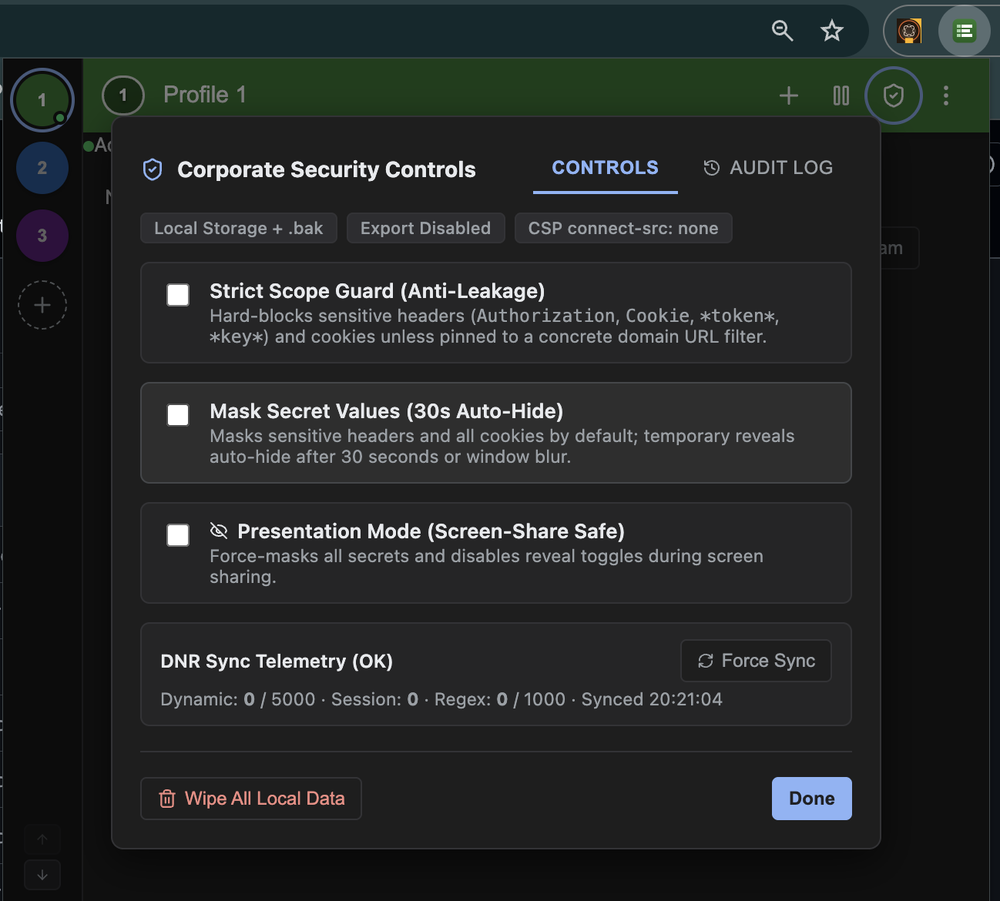
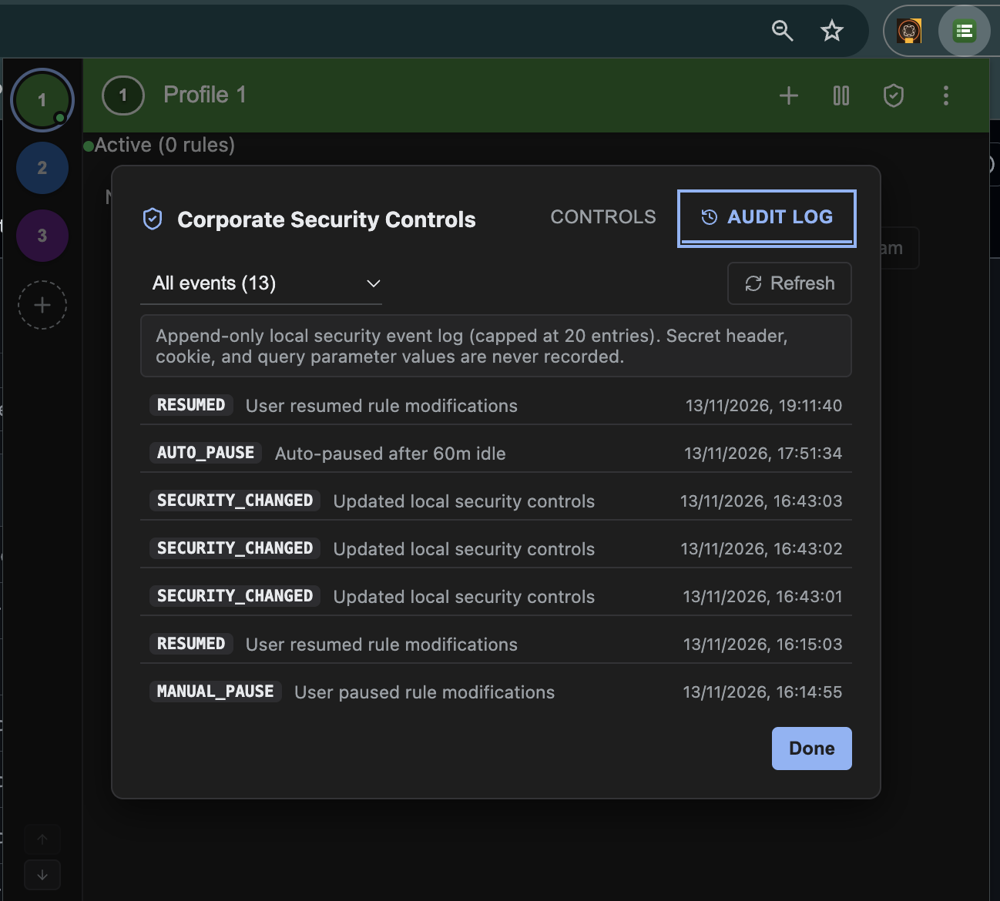

How to Use SafeHeader
A step-by-step visual guide to configuring rules, scoping requests, and managing security.
Adding and Managing Rules
Click the + button in the top bar to add rules across 5 categories: Request Headers (add/set/remove outgoing headers), Response Headers (override CORS or cache headers), Add Cookies (inject cookies into outbound headers without browser cookie jar pollution), Query Parameters, and Redirects / Blocks.
Profile Settings & Actions Menu
Click the three-dots (⋮) menu in the toolbar to clone active profiles, switch multi-profile execution modes, import backup configs locally, customize display density, or quickly jump into security and audit logs.

Corporate Security Controls & Scope Guard
Click the shield icon in the top toolbar to access the Corporate Security Controls panel. SafeHeader provides enterprise safety out of the box: Strict Scope Guard (Anti-Leakage) blocks sensitive auth tokens on wildcards, Mask Secret Values hides keys to prevent over-the-shoulder leaks, Presentation Mode protects during screen shares, and Wipe All Local Data instantly purges local storage.

Compliance & Local Audit Log
SafeHeader maintains a metadata-only local audit log in a fixed 20-entry FIFO ring buffer. It records rule activations, security setting changes, and scope violations with timestamps for enterprise compliance. Secret values are never logged.

Common Usage Recipes
Quick configurations for typical development workflows.
1. Bearer Token Auth
Inject an Authorization token into API calls to staging.
Rule: Request Header Name: Authorization Value: Bearer eyJhbGci... Filter: *://api.staging.corp/*
2. Local CORS Bypass
Allow localhost to access remote microservices.
Rule: Response Header Name: Access-Control-Allow-Origin Value: http://localhost:3000 Filter: *://api.dev.corp/*
3. Cookie Injection
Inject experiment or session cookies into requests.
Rule: Add Cookie Name: feature_flag_v2 Value: enabled Filter: *://*.app.corp/*
4. Redirect to Localhost
Redirect remote script assets to local dev server.
Rule: Redirect Match: *://cdn.corp.com/bundle.js Redirect To: http://localhost:8080/bundle.js